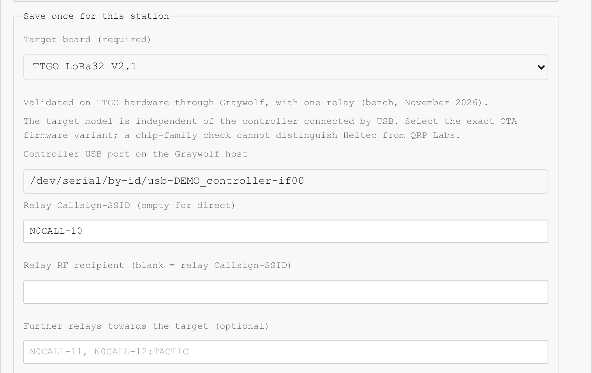
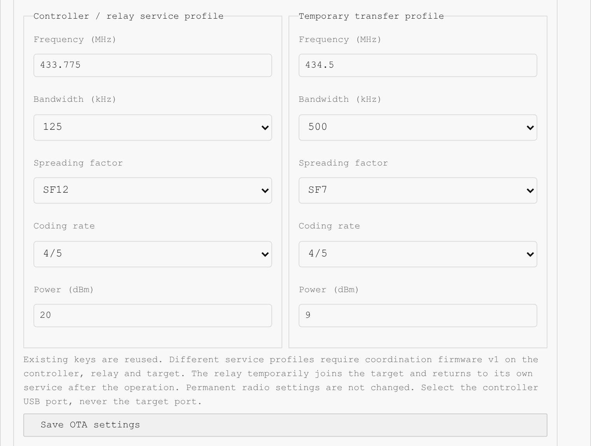
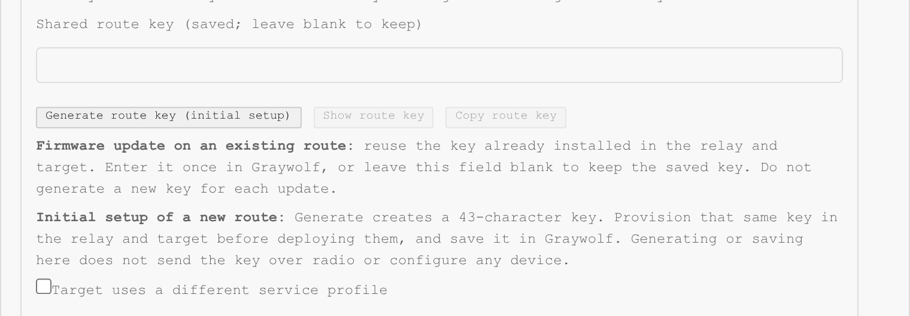
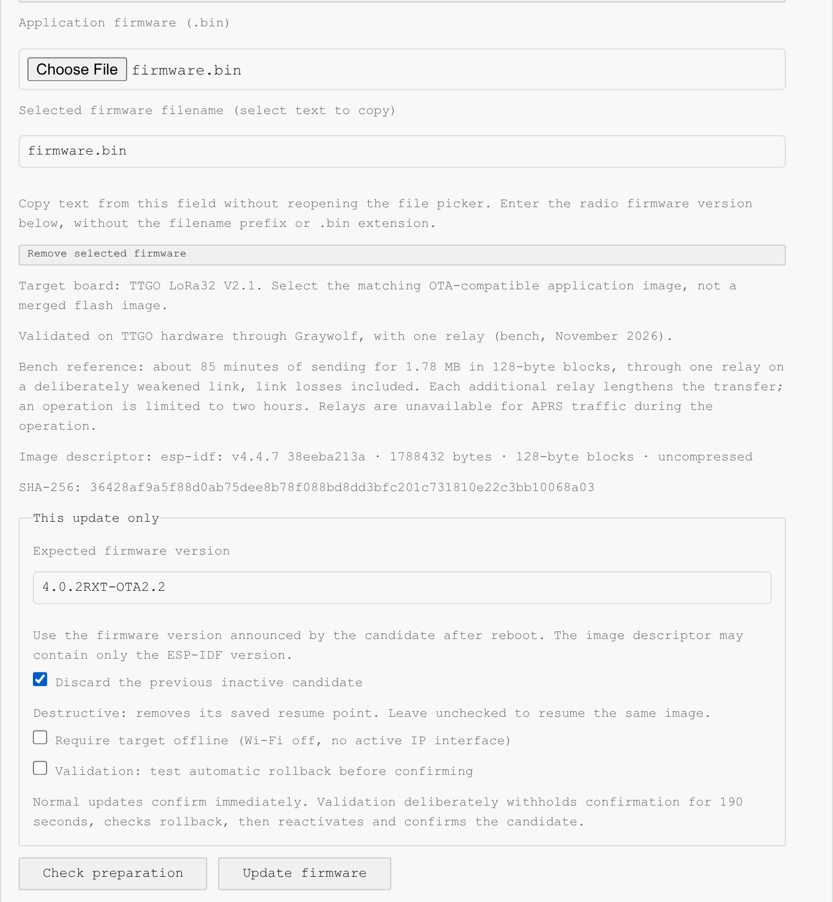
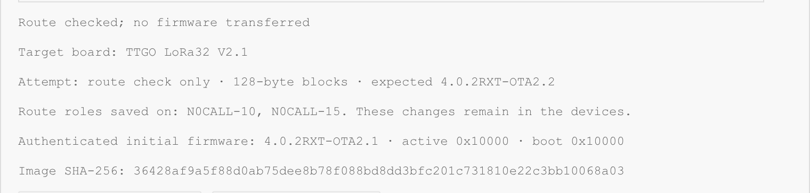
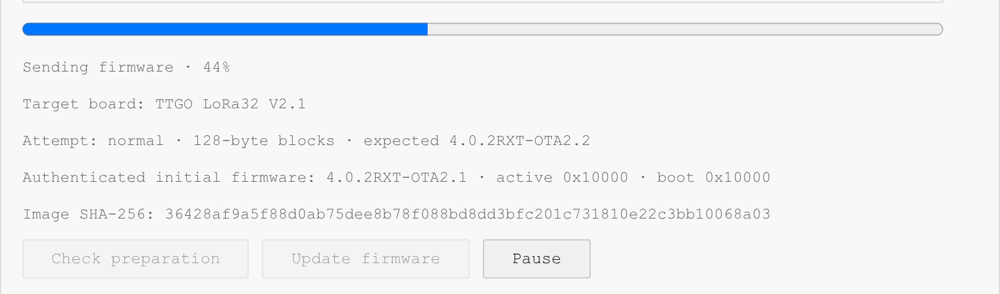
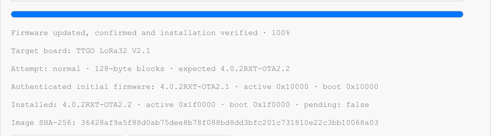

Graywolf sends new firmware to a LoRa APRS iGate or digipeater over radio, without Wi-Fi or physical access to the station: directly, or through one or more relays. The transfer is built into Graywolf; no external script is needed.
4.0.2RXT-OTA2.2 or later, available from the Web Flasher for TTGO LoRa32 V2.1, Heltec V3.2 and QRP Labs LightGateway Plus. The same firmware serves the three roles; the role comes from the configuration.The screenshots use demonstration identities (N0CALL-2 controller, N0CALL-10 relay, N0CALL-15 target) and simulated answers; no station was contacted.
A board in eco mode ignores update commands. Send it EM=OFF first, then wait for its answer in the Graywolf conversation: DigiEcoMode:OFF, or DigiEcoMode was OFF if it already was. After DigiEcoMode:OFF, the board saves its configuration and restarts; wait for that restart. Without an answer, the board did not receive the command: do not start the update.
Open Messages, then the target's conversation (not a relay's), the command panel and Update firmware over LoRa. Click View / edit radio settings.

| Field | Enter |
|---|---|
| Target board | The exact target model. Nothing is preselected; the target refuses an image for another model. |
| Controller USB port | The controller's stable /dev/serial/by-id/… link (or COMn on Windows), never the target's. |
| Relay Callsign-SSID | The relay nearest to the controller. Empty for a target reached directly. |
| Relay RF recipient | Its on-air name if it transmits under a tactical name; otherwise empty. |
| Further relays towards the target | The next relays, nearest first: K1XXX-11 or K1XXX-11:TACTICAL, at most three. Empty for a single relay. |
| Shared route key | The key already installed on the relays and the target. Once saved, leave the field empty to keep it. |
| Controller / relay service profile | The boards' usual profile: exact frequency, bandwidth, SF, CR and power. |
| Target uses a different service profile | Check only if the target works on another profile than the controller and relay (see section 5). A single relay in that case. |
| Temporary transfer profile | The fast transfer profile, for example 434.500 MHz, BW500, SF7, CR4/5. It must stay within the band allowed by your licence. |

Save with Save OTA settings. A relay does not need its own update to be configured: Graywolf gives it its role by signed command when the target is updated.
Tactical callsign changed on site: neither the command key nor the route key is invalidated. Route roles use the boards' Callsign-SSID, and the route key depends on no name. Only update the on-air name in Graywolf: the target's conversation, or, for a relay, Relay RF recipient or the name after : in Further relays.

For an existing route, reuse its key: never generate a new one for each transfer. Generate route key (initial setup) is for initial provisioning only: the new key must then be installed in the WebUI of each relay and of the target before any update. Graywolf never sends it over radio.
firmware.bin of the target's OTA variant.4.0.2RXT-OTA2.2.



Duration: on the bench, a 1.78 MB image took about an hour and a half of sending in 128-byte blocks, through one relay and a deliberately weakened link. Each additional relay lengthens the transfer. An operation is limited to two hours.
During the whole operation, relays no longer repeat ordinary APRS traffic. Choose a quiet time for a digipeater an area depends on.
If the target works on another frequency than the controller and relay, check Target uses a different service profile and enter its full profile. Graywolf then moves the relay to the target's profile for the operation (rendezvous), keeps it there under a 60-second lease renewed regularly, then returns it to its own profile and reads it back. If the link is lost, the relay returns to its profile by itself after 60 seconds. No permanent configuration is changed. This mode accepts a single relay only.
| Message or symptom | Check |
|---|---|
| No application reply from … for OTA=? | Eco mode, the board's actual frequency and profile, command key, transmit enabled. |
| The end-to-end HMAC route check failed | The route key saved in Graywolf must be the boards' key. |
| BUSY at the start of the transfer | A different partial image is pending: check Discard to replace it. |
| target is not offline | The target has Wi-Fi: uncheck Require target offline. |
| Radio restoration could not be confirmed | Read back the profile of each relay and of the controller. A relay returns to its profile by itself after 60 seconds without a keepalive. |
Bench run on 14-15 November 2026: three TTGO LoRa32 V2.1, one relay, target on another service profile (433.775 / 434.100 MHz). Full image transferred in two sessions with resume from the stored point, five link losses recovered, activation, confirmation and readback succeeded. Chains of several relays are tested in simulation only. Heltec and QRP Labs have not yet been run on hardware. No field validation.